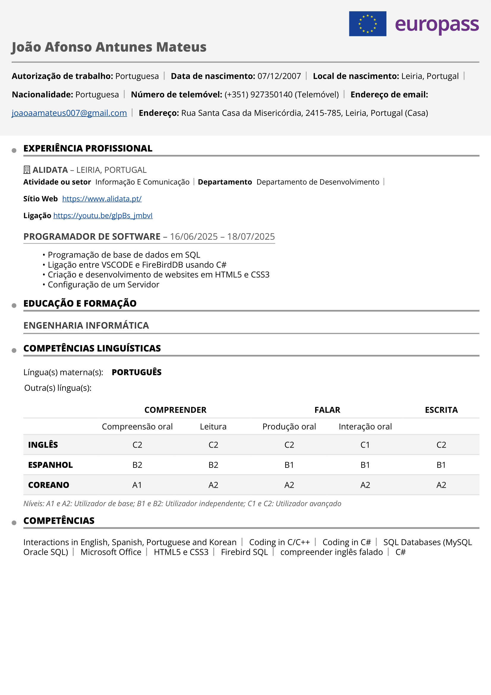

My internship at Alidata
Company Presentation
Alidata is a Portuguese company founded in 1984, specialised in the development of management software. Over more than 40 years of activity, it has stood out in the technology sector for its capacity for innovation, constant adaptation to client's needs, and the creation of IT solutions that keep up with market evolution. Currently, it has companies spread across several continents, including countries such as Angola, Brazil, China (Macau), among others.
At Alidata, there are two main categories: Hardware and Software. On the Hardware side, we find computer assembly, contact with clients and partners to solve problems with their machines and IT equipment, as well as a section focused on printers located on the same floor.
On the other hand, the Software area covers the room where I stayed, the Development Department where programmers work together on tasks according to client requests. Other departments include task organisation and distribution among programmers, the training department, technical support, and marketing.
Tasks Performed
During my internship at Alidata, I learned to program in SQL and also learned to use the FireBird database (IBExpert - IDE). I connected the database to Visual Studio Community using C# and made records and modifications to the database from there. After completing that project, I self-studied HTML5 and CSS3 to be able to carry out the final project, which was a small website.
Additionally, I spent one day in the hardware department to gain different experience. I configured a server and installed a virtual machine with Windows 11 on it, where I had to use a method to bypass TPM 2.0 and configure Windows for local use (without internet).
Difficulties Encountered
My only difficulties were at the beginning, when I had to drastically adapt to a new database, SQL programming, and connecting to Visual Studio. However, as the days went by, everything became more understandable and easier.
Relevant Aspects
My relationship with the staff was professional at all times, nevertheless, the entire Alidata team is very cheerful, positive, and welcoming. I was always surrounded by people, some more extroverted than others, but I got along well with everyone.
The internship supervisor always cared about my work, checking if everything was going well and was always willing to help. However, she let me follow my own pace and gave me enough freedom to be autonomous and independent in the work I carried out during the 5-week internship.
What I learned, and what I would like to have learned
I learned to use a new database (Firebird), which is, indeed, somewhat more professional and advanced. Even so, I was able to adapt and learn to program in SQL.
After that learning process, I expanded my knowledge of C# and connected it to the database using a combination of C# and SQL. Quite a challenging task, but with effort and dedication, it was successfully achieved.
And finally, I learned both of the most common languages for web page development: HTML and CSS. This self-learning process helped me become more independent and motivated in acquiring knowledge on my own.
Something I didn't get the chance to learn due to the short duration of the internship was the programming language JavaScript, which would have been very useful for developing web pages.
Conclusion
Above all, I believe that during this short period of time I developed new skills and abilities. I gained autonomy, independence, and greater determination thanks to the tasks I carried out.
The experience I was given and exposed to is not something one gains in a school environment, but rather in a workplace setting, like in this software company. To conclude, I once again express my gratitude for all the help and support I received, especially mentioning the two people who stood out the most until the final stage, Nelly and Pedro. I couldn't have asked for a better internship.
Thank you Alidata!
Check CV (Image)
Download CV
PDF Link